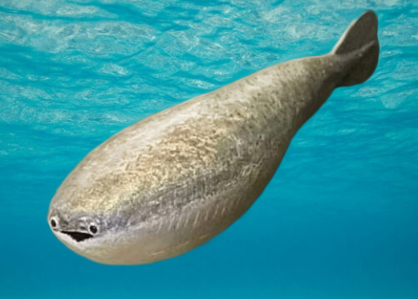
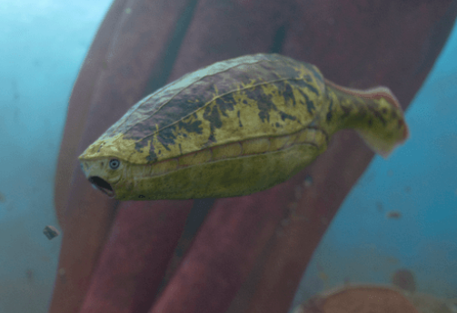
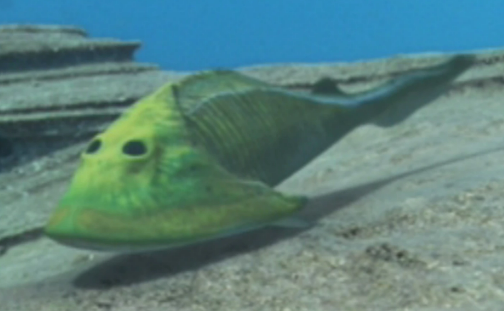

Diario de Criaturas Prehistoricas
Este es un diario para categorizar diferentes criaturas
Sacabambaspis
- Alimencation: Filtrador
- Epoca: Ordovicico
- Descripcion: Uno de los primeros peces, con una gran estructura osea pero sin mandibula lo que lo hace tener una expresion facial eterna
- Representacion:

Arandaspis
- Alimencation: Filtrador
- Epoca: Ordovicico
- Descripcion: Uno de los primeros peces, con una gran estructura osea pero sin mandibula lo que lo hace tener una expresion facial eterna
- Representacion:

Cephalaspis
- Alimencation: Filtrador
- Epoca: Silurico
- Descripcion: Uno de los primeros peces, con una gran estructura osea pero sin mandibula lo que lo hace tener una expresion facial eterna
- Representacion:
